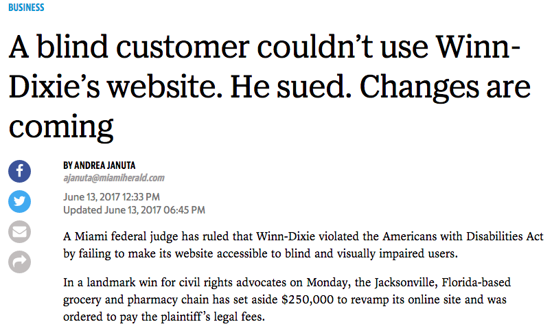
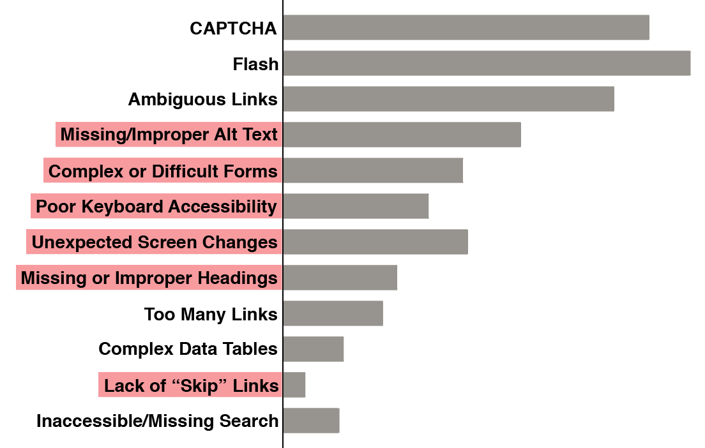
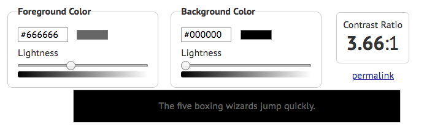
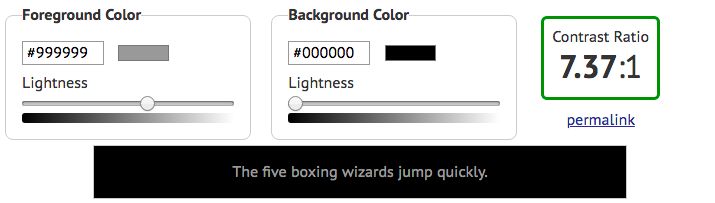
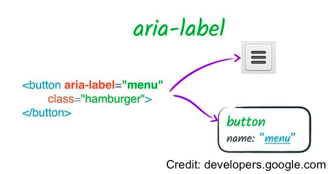
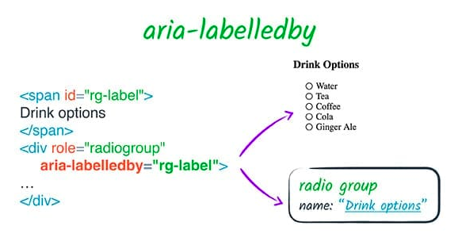
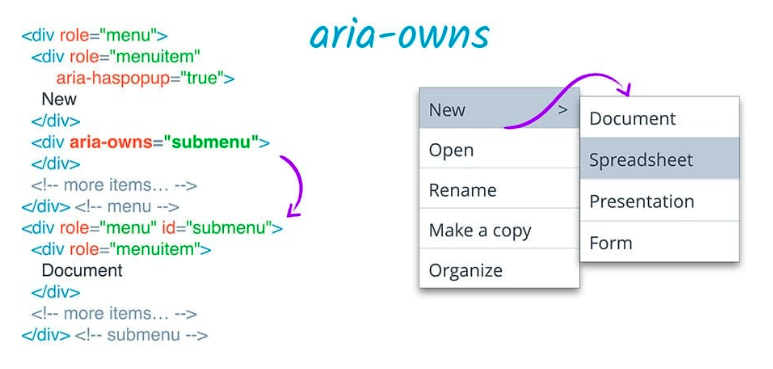
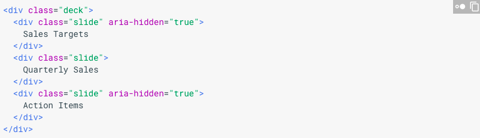

Introduction to Web Accessibility and Inclusive Design
Agenda
- 6:10 - What Is Accessibility & Inclusive Design?
- 6:40 - Assistive Technology Demo (Interactive)
- 7:00 - How Do I Build and Evaluate Inclusive Websites?
- 7:40 - BREAK
- 7:45 - How Do I Improve My Code for Accessibility?
- 8:45 - What Can I Do With My New Knowledge?
Define Web Accessibility
“Web accessibility means that people with disabilities can perceive, understand, navigate and interact with the Web, and that they can contribute to the Web.”Introduction to Web Accessibility
From the W3C's Web Accessibility Initiative
Define Inclusive Design
“Inclusive Design is design that considers the full range of human diversity with respect to ability, language, culture, gender, age and other forms of human difference.”Inclusive Design Research Centre
From OCAD University
“The power of the Web is in its universality. Access by everyone regardless of disability is an essential aspect”Tim Berners-Lee, W3C Director and inventor of the World Wide Web
Using An Inclusive Strategy When Building Products
“...By thinking inclusively from planning, through prototyping, to production, you can cast a much wider net. That means more, and happier, users at very little if any more effort ... Inclusive design is the means and accessibility is the end — and you get a lot more than accessibility along the way.” Heydon Pickering, author, 'Inclusive Design Patterns'Accessibility In The Workplace
It's The Law
Accessibility In The Workplace
The Americans With Disabilities Act (ADA) requires that individuals with disabilities must have access to online tools.
Section 508 requires that all federal government online resources be accessible (includes organizations that receive federal funding)
The Web Content Accessibility Guidelines (WCAG) 2.0 covers a wide range of recommendations for making Web content more accessible.
Accessibility In The Workplace
Lawsuits Filed Within The Last 12 months:
Nike
Pandora
Hershey
Lord & Taylor
Burger King
Glossier
What are the common problems?
The Power of Accessible Technology
Pro Tip: You can automatically enable closed captioning by adding ?cc_load_policy=1 to the url of an embedded YouTube video
Understand more
about this group of users and
the
Diversity of User Abilities
Nearly
1 in 5 People
Have a Disability in the U.S.
Source
Four Major Categories of Accessibility
The following categories are illustrative and are not intended to be an exhaustive listing of all disabilities and barriers.Visual
This can mean non-sighted users, users with low vision, users with obstructed vision, or older users.
2% of all Americans are blind or have low vision;
6% of Americans ages 65+. (
Source)
About 4% of the population has color-blindness. ( Source)
- Screen readers
- Braille output
- Text zooming
- Color contrast controls
- Keyboard navigation
Auditory
15% of American adults aged 18+ report some trouble hearing (Source). This can range from mild/moderate hearing loss ("hard of hearing") to deafness.
- Video and Audio Captions
- Visual alternatives to audio alerts
Physical
Users could have weak or limited muscle control,
lack of sensation, missing limbs, joint disorders or pain that prevents movement
- Keyboard Navigation
- Eye trackers
- Assistive Switches (Joystick, Buttons)
Cognitive, Learning and Neurological
Users could have neurological, behavioral or mental health disorders that may impact how well they hear, move, see, speak, and understand information.
- Spelling and Grammar Checkers
- Text-To-Speech
- Voice Browser
- Clear navigation, descriptive titles, easy-to-read text
More on The Diversity of Web Users
How People with Disabilities Use the Web - Diversity of Web UsersFrom the W3C's Web Accessibility Initiative
What is Assistive Technology?
Provides services beyond those offered
by the browser to facilitate user interaction
with web content by people with disabilities
Accessible Rich Internet Applications (WAI-ARIA) 1.0
Important Terms
How @blindflimcritic Uses Instragram with a Screen Reader
Ready to try it for yourself?
Activate
VoiceOver
Screen Reader -
iPhone
Instructions for activating and using VoiceOver on an iOS device.
Activate VoiceOver from Settings > General > Accessibility


Using
VoiceOver
Screen Reader on
iPhone
Once VoiceOver is Activated
Activate an Item on the Screen: Double Tap
Next Item: Flick Right
Previous Item: Flick Left
Scroll Down/Up: Three Finger Up/Down
Activate Rotor: Turn Clock-wise
Next/Previous Rotor Item: Flick Down/Flick Up
Activate
TalkBack
Screen Reader -
Android
Settings > Accessibility > TalkBack
Getting started with TalkBack
(Google Support Docs)
Activate
VoiceOver
Screen Reader - OSX
Instructions for activating VoiceOver for OSX.
Activate VoiceOver from System Preferences > Accessibility > Enable VoiceOver checkbox
Using
VoiceOver
Screen Reader for
OSX
Once VoiceOver is Activated
Turn on VoiceOver: command + F5
Use the VO Keys: control + option
From the address bar enter the Web area: VO + shift + down arrow
Next item: VO + right arrow
Previous item: VO + left arrow
Open Web Rotor: VO + U
The Web Rotor is used to navigate a page by various elements such as headings, landmarks or links
Screen Readers for Windows
How Do I Build Inclusive and Accessible Websites?
Remember This Acronym: POUR
Perceivable
Operable
Understandable
Robust
Understanding the Four Principles of Accessibility, W3.orgWeb Content Accessibility Guidelines (WCAG 2.0)
WCAG 2.0 Official Quick Reference- Don't panic!
- You don't have to read through all this documentation to start following best practices for accessibility.
- Focus on improving user experience rather than checking of boxes.
- WebAIM provides a checklist that is more beginner-friendly.
Perceivable
- Alternative text for images*
- Descriptive labels for form inputs and buttons*
- Captions or transcripts for audio
- Audio description tracks for videos
- Logical reading and navigation order (with and without stylesheets)*
- Using semantic HTML* and table headings
- Distinguishale use of color and color contrast*
- User can control text size and audio playback
Operable
- All interactive elements are keyboard navigable*
- Time limits are adjustable
- Pause animated content or rapidly updating content
- Content only flashes 3 times per second or less (seizures)
- Use proper heading structure or skip navigation links to bypass navigation blocks*
- Use descriptive text for page titles, headings, labels, links, and buttons*
- Present multiple ways to find other pages
Understandable
- Set the language of the page and sections of the page*
- Define unusual words and abbreviations
- Avoid unpredictable changes like pop-up windows
- Use consistent navigation and labelling on all pages
- Assist users in filling out forms
- Have human readable form validation with suggestions for correction
- Allow user to confirm or reverse actions that have serious side effects (legal, financial, assessments)
Robust
- Make sure your code can work with assistive technologies
- Keep in mind that browser compatability affect accessibility too
- Valid code is accessible code. Validate your code for parsing errors.
- Use semantic HTML*
- Or programmatically set the name, role, state, and value of interactive elements*
Activity: Manually Test A Website
https://thimbleprojects.org/edudevcf/493170/- Take 10 minutes
- Browse the page using a screen reader
- And keyboard navigation (TAB, SHIFT-TAB, ARROW KEYS)
- Keep in mind: POUR
What issues did you notice?
What if I missed something?
- Accessibility Evaluation Tools are very good at finding issues with your code.
- However, they are not very good at evaluating user experience and interactions.
- Use accesibilty checkers in addition to manual testing.
Browser Plugins for
Accessibility Testing
The WAVE browser extension from WebAIM allows you to evaluate web content for accessibility issues directly within the browser (Chrome, FireFox)
WAVE Web Accessibility Evaluation ToolOnce installed a "W" icon will appear in the browser toolbar. Press the icon to run an audit of the page.
Browser Plugins for
Accessibility Testing
aXe is an open-source rules library for accessibility testing that allows you to evaluate the current state of a page without reloading its contents. (Chrome, FireFox)
aXe Browser Extension
Chrome Dev Tools
for
Accessibility
Lighthouse is built into the Chrome DevTools and can perform audits for performance, accessibility, progressive web apps, and more.
Lighthouse Audit How-To Chrome Accessibility Development Tools (for older browsers)
JavaScript Module for
Local Testing
tota11y is an open source accessibility visualization toolkit from Khan Academy which can be added to your codebase and run locally during development.
tota11y Accessibility Visualization ToolkitActivity:
Perform an accessibilty audit
https://thimbleprojects.org/edudevcf/493170/
- Take 10 minutes
- Download a browser plugin or use Chrome DevTools.
- Run the audit on the website you already manually tested.
- Review the results to find additional issues.
What new issues did the accessibility checkers catch?
Accessibility Quick Wins
- Set the language attribute
- Have a descriptive title
- Appropriate alt text for images
- Validate your code
- Check color contrast
HTML language attribute
Specifying the language of the page tells the screen reader how to pronounce the words.
If you don't specify, the screen reader will use the user's default language, meaning potential mispronunciations.
<html lang="en">
HTML language tags (video)
Include a descriptive title
It's surprisingly easy to forget to include a title tag in the head of your webpage.
<head>
<title>The Funion - Front Page</title>
</head>
Make sure it accurately and concisely describes the content of the page. This way it's easier for users to find your website when multiple tabs or windows are open.
Other places for descriptive text
While you're at it, check the following elements to make sure their text or labels accurately describe their function out of context.
- links
- headers
- buttons
Alt Tags Best Practices
- The alt attribute specifies alternative text for an image that convey the same thing as the image.
- Alt tags are also important for Search Engine Optimization (SEO) and when your images don't load.
- If an image is purely decorative, set an empty alt tag and screen readers will ignore that element.
- Logos are not just decorative, so include the name represented by the logo.
- Avoid redundant phrases like "image of".
Alt Tag Examples
<img src="pup.jpg"/> <-- No alt-tag; Inaccessible -->
<img src="pup.jpg" alt=""/> <-- Decorative, ignored by screen readers -->
<img src="pup.jpg" alt="puppy"/> <-- Better -->
<img src="pup.jpg" alt="Dalmation puppy playing fetch"/> <-- Best -->
Valid code is accessible code!
Accessibility checkers can catch invalid HTML like:
idattributes must be unique.- If you're using tables, include table headers
<th> - Wrap list items in ordered or unordered list tags.
<ul><li></li></ul>
Color Contrast
Your pages need sufficient contrast between foreground (text or graphics) and the background.
4.5:1 contrast ratio for for normal text
3:1 constrast ratio for large text (greater than 18pt)
Color Contrast
 Activity: Quick Wins
https://thimbleprojects.org/edudevcf/493170/What are some quick fixes we can make to this website to resolve some of the issues found by the accessibility checker?
- Set the language attribute
- Have a descriptive title
- Appropriate alt text for images
- Validate your code
- Check color contrast
Semantic HTML
Semantic HTML Elements communicate meaning, content and structure to the browser and the developer.
<body>
<h1>Page Header</h1>
<h2>I am a subhead.</h2>
<button>Click me!</button>
</body>
Non-Semantic HTML
Non-semantic HTML Elements communicate less meaning to the browser, screen reader or other assistive device.
<div>
<div class = "header">Page Header</div>
<span class = "subheading">I am a subhead.</span>
<span class = "my-button">Click me!</span>
</div>
Accessibility API
Assistive devices have an accessibility API as part of their operating system. The API translates a web page into something that can be interpreted by screen readers.
Screen readers can easily read and interpret semantic HTML elements.
Non-semantic HTML elements convey no information to the accessibility API.
Semantic Landmarks
- Semantic HTML can help you logically order your page.
- Using landmarks will also help your screen reader users navigate your page more quickly.
- HTML5 includes semantic elements such as:
nav,main,aside,footer. - For older broswers that do not support HTML you can assign roles to your divs:
<div role="nav" class="navbar"> - Learn more about landmarks
Appropriate Headings
- Descriptive headings can help users better navigate your page.
- Make sure you use leveled headings in the right order.
- Use CSS to format your headings rather than using a lower level heading just for smaller text.
- If you use headings and landmarks appropriately, you will not need to add a "skip navigation link." But here's a good tutorial, if you're interested.
Navigable Headings

Form Labels
Ways to include labels with your form inputs:
1. Wrap the input element in a label tag
<label>First name: <input type="text" name="firstname"></label>
2. Use label for to associate the label text with the input using it's unique id.
<label for="firstname">First name:</label>
<input type="text" name="firstname" id="firstname">
Advanced Form Fu
- Hiding labels - Caution: using CSS like
visibility: hiddenanddisplay: nonewill also hide that text from screen readers. - Using ARIA labels: coming up next!
- Accessible form validation and instructions
Activity: Semantic Refactor
https://thimbleprojects.org/edudevcf/493170/How can you refactor the code to include more semantic HTML elements?
- Replace non-semantic divs with native HTML elements.
- Use HTML5 landmarks or roles.
- Order headings appropriately.
- Label form elements.
Going Deeper: Advanced Accessibility Concepts
Accessible Rich Internet Applications (ARIA)
If you are using non-semantic HTML to structure your webpage, ARIA can modify existing element semantics, or add semantics where no native semantics exist. ( Source)
In other words, ARIA helps screen readers decipher Web content.
Top 5 ARIA Attributes To Know
1. aria-label
Source
Top 5 ARIA Attributes To Know
2. aria-labelledby
Source
Top 5 ARIA Attributes To Know
3. aria-owns
Source
Top 5 ARIA Attributes To Know
4. aria-hidden
Source
Top 5 ARIA Attributes To Know
5. aria-live

Source
Keyboard Navigation
Keyboard accessibility is one of the most important aspects of web accessibility.
Many users with motor disabilities rely on a keyboard.
AbilityNet Video(2:08-3:10)Define Focus
When you tab through the elements on your page, they are usually highlighted subtly to show that the focus is on that element.
You can modify this styling but do not remove it!

Define Tab Order
The order in which elements receive focus should be logical.
- Interactive elements like links, buttons, and form inputs are natively tab accessible.
- Headings and text usually do not need to be tab accessible, so do not add tabindex to page contents.
- Caution! CSS can override the order they show up in the code (or DOM).
Appropriate use of tabindex
- The
tabindexattribute can also be used to change the tab order. - If you are creating custom interactive components, you may need to set
tabindex=0. - Setting
tabindex="-1"removes the element from the tab order, but allows you to programmatically manage it's focus with JavaScript. - Setting a
tabindexgreater than 0 will move that element up in the tab order. This is not recommended. - Learn more about tab index and managing focus
JavaScript Complications:
Modals and More
- If you are using modals, ensure they are fully screen reader accessible (Example)
- If you are relying on mouse-specific events (mouseover, mouseout, dblclick) double up the functionality with non-mouse-specific events
- Make sure to inform your users when content has dynamically changed!
- Test your JavaScript code on many different browsers and assistive devices
Activity: Keyboard Nagivation
https://thimbleprojects.org/edudevcf/493170/To wrap things up, find places where you can improve the tab order and focus.
What else could you improve?